过程: 使用 AutoGEM 设置
“关闭窗口”(Close Window)
 “拭除未显示的”(Erase Not Displayed)
“拭除未显示的”(Erase Not Displayed) 
 Simulate_Modeling\Meshing
Simulate_Modeling\Meshing
-
任务 1. 打开并调查几何模型。
1. 单击“文件”(File) > “打开”(Open)。“文件打开”(File Open) 对话框随即出现。
2. 从“类型”(Type) 下拉列表中选择STEP (.stp, .step)。
3. 选择 meshing.stp，然后单击“打开”(Open)。“导入新模型”(Import New Model) 对话框随即出现。
4. 保留全部默认设置并单击“确定”(OK)。几何显示在窗口中。
5. 在功能区中，选择“检查”(Inspect) 选项卡。
6. 在“测量”(Measure) 组的“测量类型”(Measure Type) 下拉菜单中选择“体积块”(Volume) 。“测量:体积块”(Measure:Volume) 对话框随即出现。
7. 在“测量:体积块”(Measure:Volume) 对话框中，单击下拉箭头以展开结果布局。将在“测量:体积块”(Measure:Volume) 对话框中报告模型体积，如图所示。

如果已经选择“实体几何”(Solid Geometry) 并且在模型中仅曲面可用，则不会报告体积。
8. 关闭“测量:体积块”(Measure:Volume) 对话框。
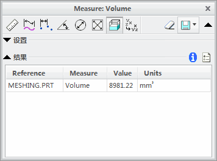
-
任务 2. 向模型分配材料属性。
1. 在功能区中，选择“主页”(Home) 选项卡。
2. 在“材料”(Material) 组中单击“材料”(Materials) 。将出现“材料”(Materials) 对话框。
3. 从材料列表中选择 brass.mtl，然后单击“添加材料”(Add Material) 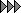。
4. 单击“确定”(OK)。
5. 在“材料”(Material) 组中单击“材料分配”(Material Assignment)
 。将出现“材料分配”(Material Assignment) 对话框。
。将出现“材料分配”(Material Assignment) 对话框。
6. 校验“零件:MESHING”(Part:MESHING) 已在“参考”(References) 部分中列出，并且 BRASS 作为材料在“属性”(Properties) 部分列出。
7. 单击“确定”(OK)。
-
任务 3. 向模型添加网格。
1. 在功能区中，选择“精细模型”(Refine Model) 选项卡。
2. 从 AutoGEM 组中单击AutoGEM
 。将出现 AutoGEM 对话框。
。将出现 AutoGEM 对话框。
3. 保留所有默认设置并单击“创建”(Create)。模型已网格化，如图所示。
4. 在“AutoGEM 摘要”(AutoGEM Summary) 对话框中，单击“关闭”(Close)。
5. 在“诊断：AutoGEM 网格”(Diagnostics:AutoGEM Mesh) 对话框中，单击“关闭”(Close)。
6. 在 AutoGEM 对话框中，单击“关闭”(Close)。提示保存网格时单击“否”(No)。
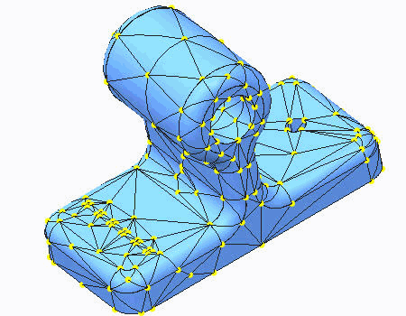
-
任务 4. 创建体积块区域用于网格细化。
1. 在功能区中，选择“精细模型”(Refine Model) 选项卡。
2. 从“区域”(Regions) 组中的“体积块区域”(Volume Region) 下拉菜单中单击“拉伸”(Extrude)
 。“拉伸”(Extrude) 操控板随即出现。
。“拉伸”(Extrude) 操控板随即出现。
3. 选择“放置”(Placement) 选项卡。
4. 单击“定义”(Define)。将出现“草绘”(Sketch) 对话框。
5. 在模型中选择显示的曲面。
6. 单击“草绘”(Sketch)。
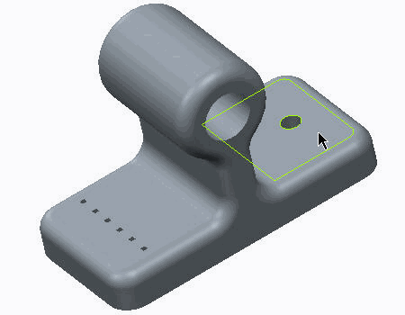7. 在功能区中，选择“草绘”(Sketch) 选项卡。
8. 在“设置”(Setup) 组中单击“草绘视图”(Sketch View) 以定向草绘平面。
9. 在“设置”(Setup) 组中单击“参考”(References) 。“参考”(References) 对话框随即显示。
10. 选择孔的边作为将要草绘的几何的参考。
11. 单击“关闭”(Close)。
12. 草绘一个以该孔为中心的直径为 5.0 mm 的圆，如图所示。
13. 单击“确定”(OK)
 以返回到“拉伸”(Extrude) 操控板。
以返回到“拉伸”(Extrude) 操控板。
14. 单击“穿透”(Through All)
 。
。
15. 单击“应用保存更改”(Apply-Save Changes)
 。
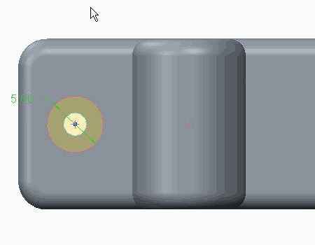
。
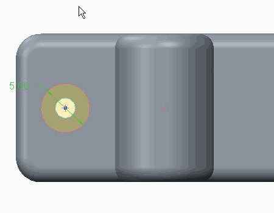16. 在功能区中，选择“精细模型”(Refine Model) 选项卡。
17. 从 AutoGEM 组中单击AutoGEM
。将出现 AutoGEM 对话框。
18. 保留所有默认设置并单击“创建”(Create)。模型已网格化，如图所示。请注意孔周围元素的分布。
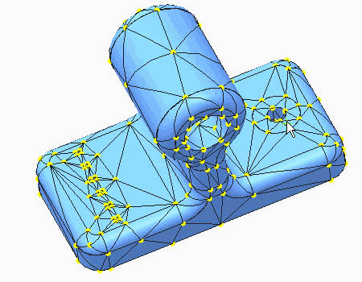
现在体积块区域的虚拟边界是模型的一部分，因此，将使用此边界强制创建节点。另请注意，模型的背面 (体积块区域的另一个边界的所在之处) 也已经网格化。
19. 在“AutoGEM 摘要”(AutoGEM Summary) 对话框中，单击“关闭”(Close)。
20. 在“诊断：AutoGEM 网格”(Diagnostics:AutoGEM Mesh) 对话框中，单击“关闭”(Close)。
21. 在 AutoGEM 对话框中，单击“关闭”(Close)。提示保存网格时单击“否”(No)。
-
任务 5. 创建曲面区域用于网格细化。
1. 在功能区中，选择“精细模型”(Refine Model) 选项卡。
2. 从“区域”(Regions) 组中单击“曲面区域”(Surface Region) 。“曲面区域”(Surface Region) 操控板随即出现。
3. 选择“参考”(References) 选项卡。
4. 在“草绘”(Sketch) 部分，单击“定义”(Define)。将出现“草绘”(Sketch) 对话框。
5. 在模型中选择显示的曲面。
6. 单击“草绘”(Sketch)。
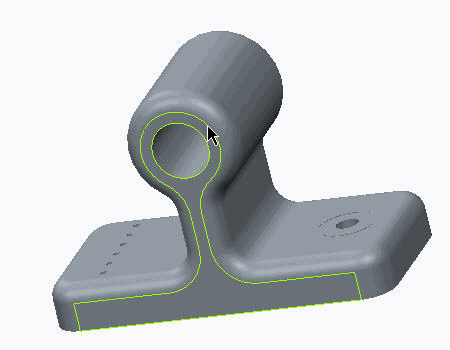7. 在功能区中，选择“草绘”(Sketch) 选项卡。
8. 在“设置”(Setup) 组中单击“草绘视图”(Sketch View) 以定向草绘平面。
9. 在“设置”(Setup) 组中单击“参考”(References) 。“参考”(References) 对话框随即显示。
10. 选择孔的边作为将要草绘的几何的参考。
11. 单击“关闭”(Close)。
12. 草绘一个以该孔为中心的直径为 7.5 mm 的圆，如图所示。
13. 单击“确定”(OK)
返回到“曲面区域”(Surface Region) 操控板。
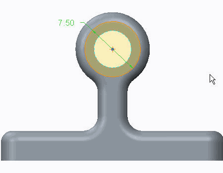14. 在模型中选择显示的曲面。
15. 单击“应用保存更改”(Apply-Save Changes)
。
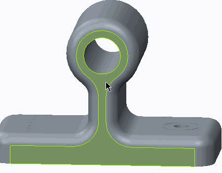16. 在功能区中，选择“精细模型”(Refine Model) 选项卡。
17. 从 AutoGEM 组中单击AutoGEM
。将出现 AutoGEM 对话框。
18. 保留所有默认设置并单击“创建”(Create)。模型已网格化，如图所示。请注意孔周围元素的分布。
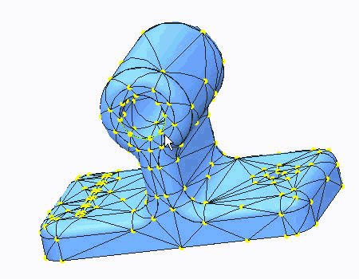
现在曲面区域的虚拟边界是模型的一部分，因此，将使用此边界强制创建节点。请注意，模型的背面还没有网格化。
19. 在“AutoGEM 摘要”(AutoGEM Summary) 对话框中，单击“关闭”(Close)。
20. 在“诊断：AutoGEM 网格”(Diagnostics:AutoGEM Mesh) 对话框中，单击“关闭”(Close)。
21. 在 AutoGEM 对话框中，单击“关闭”(Close)。提示保存网格时单击“否”(No)。
过程就此结束。